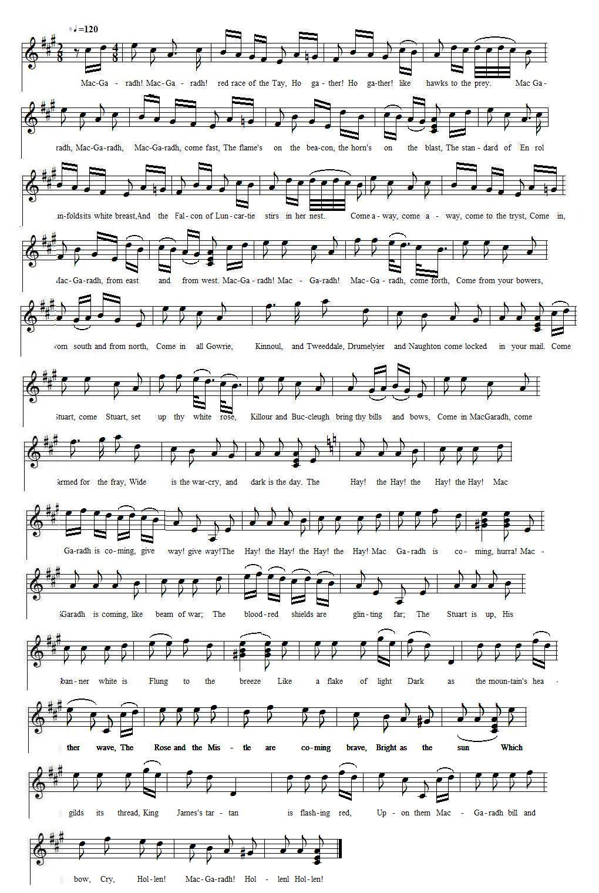
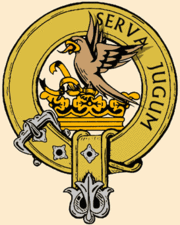
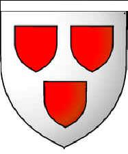

The Gathering of the Hays
Chant de rassemblement du Clan Hay
The first two stanzas are anonymous, the rest ascribed to Captain James Hay
Tune - MélodieUnknown, replaced here by "Delgaty Castle"
by Robert Petrie (1767-1830)
Sequenced by Christian Souchon

|
To the tune:
Delgaty is an estate with a mansion in north Aberdeenshire, near Turriff, and holds the distinction of being Scotland’s oldest lived-in castle. The castle was built around 1579, perhaps incorporating an older structure. It was originally the property of the Hays of Erroll. In 1762 it was sold to Peter Garden, Esq. of Troup. Robert Petrie (1767-1830) was an employee of the Garden family at Troup, Banffshire. His 2nd Collection is dedicated to Mrs. Garden of Troup. The tune is to be found in Petrie's "Collection of Strathspey Reels and Country Dances", 1790, pg. 15. Source "The Fiddler's Companion" (cf. Liens). Not knowing to what tune the poem below was set, I used this melody which appears to be Clan Hay's pipe music as stated in the Wikipedia article dedicated to Clan Hay. It comprises 5 movements: Allegro, Piano, Minore piano, Piano, Piano that might correspond with the 5 parts of the poem written in imitation of a Highland Pibroch. The Gaelic names of the movements composing a pibroch are: - "Ûrlar" ( "house floor", here "Gathering"), - "Siubhal" ("passing, walking", here "Quick march"), - "Leumluath" ("bound-fast", here "Charge"), - "Taorluath" ("moving-fast", "faster", here "Battle"), - "Crunluath" ("crown-fast", "fastest", here "Pursuit"). The word "Pibroch" is related to the word "pipe". This genre of martial music of the Highlands is also called "Ceôl Môr" (great music) as opposed to the rest (dance music, etc.), called "Ceôl Beag" (little music). Source: Wikipedia. |
A propos de la mélodie:
Delgaty est une propriété ainsi qu'un manoir sis en Aberdeenshire, près de Turriff, qui a la particularité d'être le château le plus longtemps habité d'Ecosse. Il fut construit vers 1579, peut-être à partir d'éléments plus anciens. C'était à l'origine la propriété des Hays d'Erroll. En 1762 il fut vendu à Peter Garden de Troup. Robert Petrie (1767 - 1830) était un employé de la famille Garden de Troup, Banshire. Sa 2ème "Collection" est dédiée à Mme Garden de Troup. Le présent morceau se trouve dans sa "Collection de strathpeys et de contredanses", 1790, p.15. Source "The Fiddler's Companion" (cf. Liens). Ne sachant pas sur quelle mélodie le poème ci-après se chante, je propose celle-ci qui est donnée comme l'air de cornemuse du Clan Hay dans l'article Wikipedia consacré au clan Hay. Il comprend 5 mouvements: Allegro, Piano, Minore piano, Piano, Piano qui pourraient correspondre aux 5 parties du poème composé sur le modèle d'un pibroch des Highlands. Les noms gaéliques des mouvements qui constituent un pibroch sont: - "Ûrlar" ("vestibule", ici "rassemblement"), - "Siubhal" ("déambulation", ici "marche rapide"), - "Leum luath" ("rapide comme un bond", ici "charge"), - "Taor luath" ("rapide comme une course", "plus rapide", ici "bataille"), - "Crun luath" ("couronne de rapidité", très vite", ici poursuite"). Le mot "Pibroch" vient de l'anglais "pipe" (fifre) qui désigne la cornemuse. Ce genre de musique martiale des Highlands s'appelle aussi "Ceôl Môr" (grande musique) par opposition au reste (musique de danse, etc.) appelé "Ceôl Beag" (petite musique). Source: Wikipedia. |

|
 THE GATHERING OF THE HAYS. [1] GATHERING. 1. MacGaradh! MacGaradh! red race of the Tay, [2] Ho gather! Ho gather! Like hawks to the prey. MacGaradh, MacGaradh, MacGaradh, come fast, The flame's on the beacon, the horn's on the blast, The standard of Erroll unfolds its white breast, And the Falcon of Luncartie stirs in her nest. [3] Come away, come away, come to the tryst, Come in, MacGaradh, from east and from west. 2. MacGaradh! MacGaradh! MacGaradh, come forth, Come from your bowers, from south and from north, Come in all Gowrie, Kinnoul, and Tweeddale, Drumelyier and Naughton come locked in your mail! Come Stuart, come Stuart, set up thy white rose, [4] Killour and Buccleugh bring thy bills and thy bows, Come in MacGaradh, come armed for the fray, Wide is the war-cry, and dark is the day. QUICK MARCH. 3. The Hay ! the Hay ! the Hay ! the Hay ! [5] MacGaradh is coming, give way ! give way ! The Hay ! the Hay ! the Hay ! the Hay ! MacGaradh is coming, hurra ! MacGaradh is coming, like beam of war ; The blood-red shields are glinting far ; The Stuart is up, His banner white Is flung to the breeze Like a flake of light Dark as the mountain's heather wave, The Rose and the Mistle [6] are coming brave, Bright as the sun Which gilds its thread, King James's tartan is flashing red, Upon them MacGaradh bill and bow, Cry, Hollen! MacGaradh! Hollenl Hollen! [7] CHARGE. 4. MacGaradh is coming ! like stream from the hill, MacGaradh is coming, lance, claymore, and bill, Like thunder's wild rattle is mingled the battle, With cry of the falling, and shout of the charge, The lances are flashing, the claymores are clashing, And ringing the arrows on buckler and targe. BATTLE. 5. MacGaradh is coming ! the banners are shaking, The war-tide is turning, the phalanx is breaking, The Southrons are flying, "Saint George!" vainly crying, And Brunswick's white horse on the field is borne down, The red Cross is shattered, The red Roses scattered, And bloody and torn the white plume in its crown. PURSUIT. 6. Far shows the dark field like the streams of Cairn Gorm, Wild, broken, and red in the skirt of the storm ; Give the spur to the steed, give the war-cry, it's "Hollen," Cast loose to wild speed, shake the bridle, and follen. The rout's in the battle, like blast in the cloud, The flight's mingled rattle peals thickly and loud. Then Hollen! MacGaradh! Hollen! MacGaradh! Hollen! Hollen! Hollen! MacGaradh! [8] |
 LE RASSEMBLEMENT DU CLAN HAY [1] RASSEMBLEMENT 1. Rouges Mac Garadh de la Tay, qu'on s'assemble, (2] Eperviers, ensemble! La proie n'est pas loin! Mac Garadh, Mac Garadh, Mac Garadh, venez vite: Le fanal, le cor invitent au festin. L'étendard d'Eroll son blanc poitrail libère; Tu quittes ton aire, Faucon de Luncarty. [3] Il est temps d'accourir, car la fête s'apprête D'orient et d'occident, et du nord au midi! 2. Mac Garadh, Mac Garadh, approchez, mes frères Quittez vos tanières, des quatre horizons! Gowrie, Kinnoul, Tweeddale, venez à la bataille! A vos cottes de mailles, Drumelyier et Naughton! Viens Stuart, viens Stuart, fixe ta Rose Blanche! [4] Killour, saisis ta hache et toi, Buccleugh, ton arc! Dans le sombre lointain, ce slogan qui résonne, C'est au combat qu'il somme, accours donc Mac Garadh! MARCHE RAPIDE. 3. La Haye, La Haye! La Haye! La Haye! [5] Place à Mac Garadh qui s'avance! Place, Place! La Haye! La Haye! Mac Garadh apparaît Dans sa gloire guerrière: Ecu rouge, bannière Des Stuart éployée: Claquant au vent, Une tache blanche Sur l'âpre bruyère ondulant. Quand des Stuart la Rose Avec le Gui s'expose [6] Ils brillent au soleil Dont leurs fils sont tissus. Le tartan du Roi Jacques Et nos arcs et nos haches Et nos "Hollen" ne passent Jamais inaperçus! [7] CHARGE. 4. Mac Garadh s'avance, comme une avalanche Mac Garadh s'avance! Claymore, hache, épieu! Quand sonne la charge, le combat fait rage Les cris du carnage montent jusqu'aux cieux. Les claymores crissent, leurs lames irisent Les flèches se brisent sur les boucliers. BATAILLE. 5. Vois, Mac Garadh s'avance. Les drapeaux se balancent Voici que la phalange à leurs coups va céder Vois l'Anglais qu'on déloge. Il invoque Saint Georges. Brunswick, on égorge ton fringant coursier! Et ta Croix rouge tombe, et tes Roses succombent Ces lambeaux immondes, ce fut ton plumet! POURSUITE. 6. Jusqu'aux rus de Cairn Gorm le champ noir s'étale Après le carnage le calme revient: Criant "Hollen", éperonne ta cavale Lâche-lui donc la bride, abandonne le frein! La chasse suit l'assaut, l'éclair le nuage Leur fuite est rage, elle est bruit et fureur O Mac Garadh! Hollen, Hollen Mac Garadh! C'est le cri que l'on reprend en chœur! [8] (Trad. Christian Souchon (c) 2010) |
|
[1] Sir Lewis John Erroll Hay, Baronnet, sent the author of the chronicle "Family of Hay" (published in 1908), Charles J. Colcock, the verses above, commenting as follows:
"Copied out of an odd leaf pasted in an old MS. history of the Hays.
It is composed in imitation of a Highland Pibroch"
. The two long stanzas of "The Gathering" are said to be of considerable antiquity. Of the first there is a version in Gaelic. The second is not older than 1646, for Hay of Yester, did not receive the title of Tweeddale until that period.
[2] Though Aberdeenshire and Nairnshire are the heart of Hay country there is a significant concentration of Hays in Perthshire, along the Firth of Tay . Tradition has it that after the legendary battle of Luncarty King Keneth III gave Hay and his sons as a reward for their deed, so much land on the river Tay in the district of Gowrie (on the north side of the Firth of Tay, between Dundee and Perth) as a falcon from a man's flew over till it settled. The land, six miles in length, was afterwards called Errol. Red alludes to the red shields on the arms of the chief, the Earl of Erroll and of the individual Clan branches quoted in verse 2: this coat of arms, "argent, three escutcheons gules" was granted the Clan's ancestor by Kenneth, so writes the not very trustworthy Scottish historian Hector Boece in his "Scotorium Historia" (1525), to intimate that the father and his two sons had been the three shields of Scotland. But the battle is supposed to have taken place in 980, whereas armorial bearing became fashionable in Scotland long after that date. [3] The source mentioned in note 1 gives the origin of the name "Mac Garadh" : It is the ancient name of the Hays and was given to the family in allusion to a celebrated action by which the first Hay raised himself from obscurity...Its litteral signification is "a dyke or a barrier" and was given to the ancestor of the Hays for his conduct at the battle of Luncarty (near Perth, on which modern history is silent), where he and his two sons stood between the fleeing Scots and the victorious Danes like a wall of defence. It then became the name of the whole race as "Clann na Garadh" and particularly the patronymic of the Chief who was designated "Mac Mhic Garadh Mor an Sgithan Deang", the "son of the son of Garadh of the Red Shields". [4] The rest of "The Gathering" (stanzas 3-6) is said to have been written by Captain James Hay in 1715 , (when the 13th Earl of Errol, Charles, attended the erecting of Prince James Stuart's standard on the Braes of Mar )." [5] In the reign of the famous Mac Beth one of Garadh's descendants went to Normandy where he married and assumed the name of "De la Haye" which is a rough translation of "Garadh", since it signifies "hedge" or "fence" (modern French "haie"). His son was one of the warriors who accompanied William the Conqueror into England. After the conquest he made a journey to Scotland to visit his uncle, the chief of Clan na Garadh. During his visit the old chief died, and there being no other heir , De la Haye was declared his successor. The name became hereditary to his descendants and the old appellation dropped into oblivion. This somewhat far-fetched explanation is in contradiction with the Gaelic dictionaries that translate "gàradh" as "garden", "yard" and "garadh" as "den", "cave"... But there are heraldic evidences of a connection between the Hays of Erroll and the Norman family Hayes de la Haye. [6] Mistletoe is the badge of the clan Hay. [7] The war-cries of ancient families were often their own names. That of the Douglases was, "A Douglas! a Douglas!" and that used by the Hays at one period was, "The Hay ! the Hay !" The war-cry was always hereditary to the family; but, like the crest, it was sometimes disused or changed by the humour of a chief. "Hollen, MacGaradh!" was the most ancient slogan ("sluagh-ghairm"="war-cry") of the Hays of Errol, but it is said to have been laid aside at a very distant period (note by McQuoid, 1888). "Hollen" might be for "halloo" and "follen" for "follow" [8] Charles Hay of Kellour , 13th Earl of Erroll was imprisoned as a Jacobite. He died unmarried and was succeeded , even in his military office of High Constable of Scotland, by his sister Mary, Countess of Erroll, an ardent Jacobite. Her sister Margaret, Countess of Linlithgow, had a daughter, Anne , who married the Earl of Kilmarnock who was executed in 1746. |
[1] Le baronnet Sir Lewis John Erroll Hay, envoya à Charles J. Colcock l'auteur de la "Chronique du Clan Hay", publiée en 1908, le poème ci-dessus avec ce commentaire: "copie d'une feuille isolée insérée dans une ancienne chronique manuscrite des Hays.
Il est composé sur le modèle d'un Pibroch des Highlands."
Les deux premiers longs couplets sont considérés comme très anciens. Il existe une version gaélique du premier. Le second ne date pas d'avant 1646, année où les Hay de Yester se virent conférer le titre de Tweeddale.
[2] Bien qu'il y ait beaucoup de "Hays" autour d'Aberdeen et de Nairn, on en trouve aussi des concentrations autour de Perth, le long de l'estuaire de la Tay . La tradition veut qu'après la bataille de Luncarty, le roi Keneth III ait donné à Hay et à ses fils en récompense de leur exploit, autant de terres le long de la Tay, dans le Gowrie (sur la rive nord du Firth, entre Perth et Dundee) que son faucon pouvait, une fois lâché en survoler avant de se poser à nouveau. Ces terres de six lieues de long furent appelées plus tard "Errol". Rouge est la couleur des écus qu'on voit sur le blason du chef, le comte d'Erroll, et sur celui des différentes branches du clan énumérées au 2ème couplet. Ces armoiries, "d'argent aux trois écus de geules" furent octroyées par Kenneth au l'ancêtre du Clan, si l'on en croit le (peu crédible) protohistorien écossais Hector Boece et sa "Scotorium Historia" (1525), pour rappeler que ce père et les deux fils avaient été jadis les trois boucliers de l'Ecosse. Mais à l'époque supposée de la bataille (980), l'usage des armoiries était encore inconnu en Ecosse. [3] La source citée à la note 1 donne l'origine du nom "Mac Garadh" : c'est l'ancien nom des Hays et il fut donné à cette famille par référence à une action d'éclat qui rendit célèbre le premier Hay...Sa signification littérale est "digue" ou "barrière" et fut donné à l'ancêtre des Hays après la bataille de Luncarty (inconnue des historiens), où ses deux fils et lui-même s'interposèrent entre les Scots en fuite et les Danois victorieux comme un rempart et rallièrent les fuyards, transformant la déroute en victoire. Ce fut ensuite le nom de tout le clan, "Clann na Garadh" et en particulier l'appellatif du chef, désormais désigné comme "Mac Mhic Garadh Môr an Sgithan Deang", le "fils du fils de Garadh aux Ecus Rouges". [4] Le reste du "Rassemblement" (couplets 3 à 6) est attribué au Capitaine James Hay qui l'aurait composé en 1715 , (lorsque le 13ème Comte Errol, Charles, participa à la levée de l'étendard du Prince Jacques Stuart sur les Hauteurs de Mar )." [5] Sous le règne du fameux Mac Beth, l'un des descendants de Garadh partit en Normandie où il prit femme et prit le nom de "De la Haye" qui est une traduction approximative de "Garadh", dans la mesure où une "haie" ou une "clôture" est aussi un barrage. Son fils fut l'un des compagnons de Guillaume de Normandie. Après le conquête de l'Angleterre, il alla en Ecosse rendre visite à son oncle, le chef du Clan na Garadh. Le vieux chef mourut alors, et comme il n'avait pas d'autre héritier, De la Haye fut désigné comme son successeur. Son nom devint héréditaire et se substitua à l'ancienne appellation qui tomba dans l'oubli. Toutefois cette explication qui semble un peu controuvée, est contredite par les dictionnaires gaéliques qui traduisent "gàradh" par "jardin" et "garadh" par "tanière" ou "caverne"... Mais l'héraldique prouve qu'il existe un lien entre les Hays d'Erroll et la famille normande Hayes de la Haye. [6] Le gui est le "badge" du clan Hay. [7] Les cris de guerre des anciennes familles étaient souvent leur propre nom. Celui des Douglas était "un Douglas! un Douglas!" et celui utilisé par les Hay fut, pour un temps, "La Haye!, La Haye!". Le cri de guerre fut de tout temps transmis d'une génération à l'autre, mais il pouvait arriver qu'il soit abandonné et remplacé par un autre selon l'humeur du chef. "Hollen, Mac Garadh!" était le plus ancien slogan ("sluagh-ghairm"="war-cry") des Hays d'Errol, mais on dit qu'il fut longtemps mis entre parenthèses (note de McQuoid). "Hollen" signifie peut-être "halloo" (taïaut) et "follen", "follow", "suivre". [8] Charles Hay de Kellour , 13ème Comte d'Erroll fut emprisonné comme Jacobite. Il mourut célibataire et fut remplacé y compris dans sa charge militaire de Grand Connétable d'Ecosse, par sa sœur Marie, comtesse d'Erroll, une farouche Jacobite. La sœur de celle-ci, Marguerite, Comtesse de Linlithgow, eut une fille, Anne , qui épousa le Comte de Kilmarnock exécuté en 1746. |